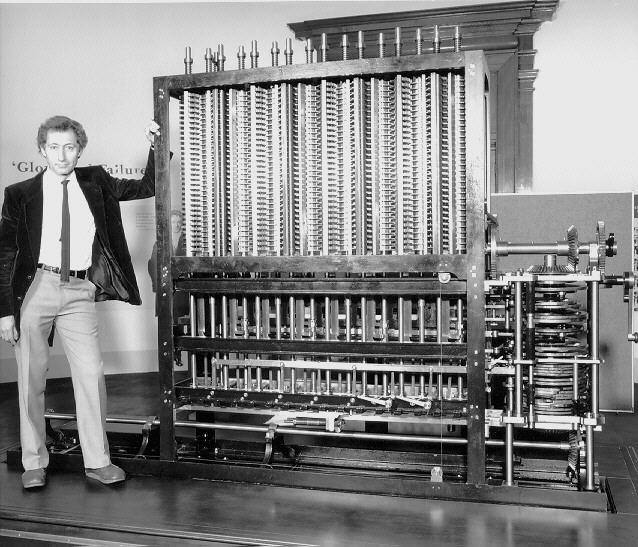
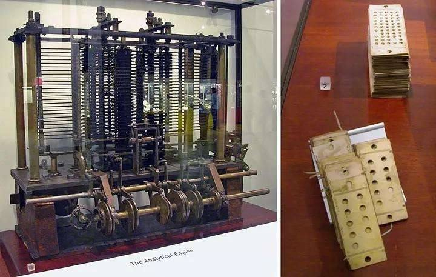
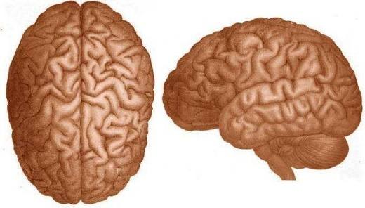
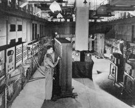
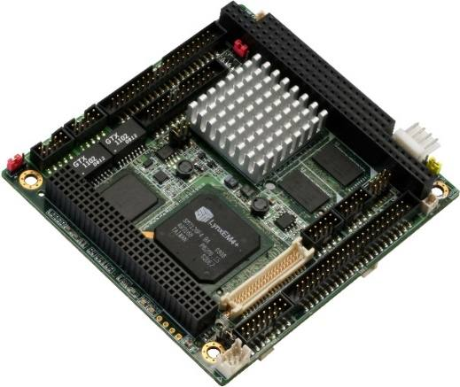
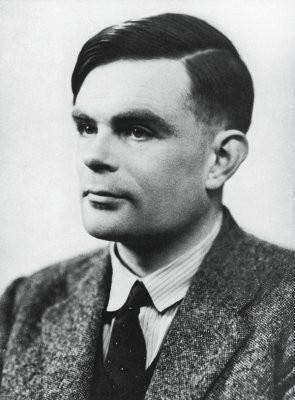
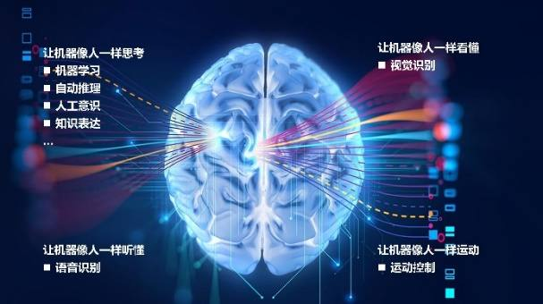
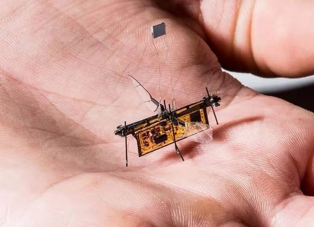
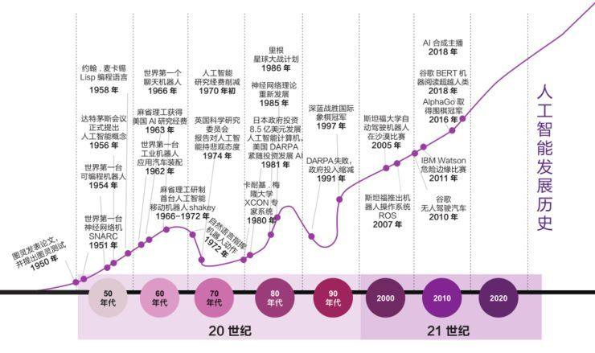

第 1 页 · 数智人才培养

数智人才培养
AI通识精品系列
周苏 教授 QQ：81505050
人工智能通识教程

第 2 页 · 第1章
第1章
周苏 教授 QQ：81505050
思考的工具


第 3 页 · 人类，又称智人，即有智慧的人，这是因为智能对于人类来说尤其重要。几千年来，人们一直在试图理解人类是如何思考和行动的，不断
人类，又称智人，即有智慧的人，这是因为智能对于人类来说尤其重要。几千年来，人们一直在试图理解人类是如何思考和行动的，不断地了解人类的大脑是如何凭借它那小部分的物质去感知、理解、预测并操纵一个远比其自身更大更复杂的世界。
第1章 思考的工具
第 4 页 · 人工智能（artificial intelligence，AI）是计算机科学的重要分支，它涉及理解和构建智能实体，并确保
人工智能（artificial intelligence，AI）是计算机科学的重要分支，它涉及理解和构建智能实体，并确保这些机器在各种情况下都能有效和安全地行动。人工智能对世界的影响“将超过迄今为止人类历史上的任何事物”，它包含从学习、推理、感知等通用领域到下棋、数学证明、写诗、驾驶或疾病诊断等子领域，人工智能可以与任何智能任务产生联系。
第1章 思考的工具
第 5 页 · 01

01
计算的
渊源
02
巴贝奇与
数学机器
03
计算机
的出现
04
计算机的
智能行为
目录 / CONTENTS
05
人工智能
的定义
第 6 页 · PART 01
PART 01
计算的渊源
第 7 页 · 几千年来，人类一直在利用工具帮助其思考。最原始的工具之一可能就是小鹅卵石了。牧羊人会将与羊群数量一致的小石头放在包里随身
几千年来，人类一直在利用工具帮助其思考。最原始的工具之一可能就是小鹅卵石了。牧羊人会将与羊群数量一致的小石头放在包里随身携带。当他想要确定是否所有羊都在时，只需要数一只羊掏出一颗石头，如果包里的石头还有剩余，那一定是有羊走丢了。
从人们开始用石头代表数字，慢慢地，用来代表5、10、12、20等不同数字的石头也就出现了，中世纪无处不在的计数板就直接来源于此，同样的理念还催生了现代算盘。几个世纪以来，人类发明的如计算尺和计算器这样的工具，在一定程度上减轻了人们的脑力劳动量。
1.1 计算的渊源
第 8 页 · 古人利用机械进行的脑力劳动远不限于计数。
古人利用机械进行的脑力劳动远不限于计数。
在英格兰威尔特郡索尔兹伯里平原上，建造于公元前2300年左右的巨石阵是欧洲著名的史前时代文化神庙遗址，它由一
些约重50吨的巨大石头组成，呈环形屹立在
绿色的旷野间。
1.1.1 巨石阵
第 9 页 · 巨石阵的主轴线、通往石柱的古道和夏至日早晨初升的太阳在同一条线上，其中还有两块石头的连线指向冬至日落的方向。在英国人的心
巨石阵的主轴线、通往石柱的古道和夏至日早晨初升的太阳在同一条线上，其中还有两块石头的连线指向冬至日落的方向。在英国人的心目中，这是一个神圣的地方。
巨石阵遗迹被用来确定冬至和夏至，同时也可以用于预测日食及其他天文事件，其实数字就蕴藏在它们的结构中。比如，遗迹正中呈马蹄形分布的19块巨石，太阳和月亮的位置以19年为一周期周而复始。按照这种做法，人们只要每个月将标记从一块石头移到另一块石头上，就可以利用它们来预测日食。
1.1.1 巨石阵
第 10 页 · 日食的发生十分不稳定，取决于特定时间内不同长度的几个周期的重合，因此，预测日食需要人们进行大量艰辛的计算，能够追踪这些周
日食的发生十分不稳定，取决于特定时间内不同长度的几个周期的重合，因此，预测日食需要人们进行大量艰辛的计算，能够追踪这些周期的工具自然就十分珍贵。
不过，并没有证据表明古人曾出于这样的目的使用过这个巨石阵。石阵中的数字很可能只是用于展现神的力量。
1.1.1 巨石阵
第 11 页 · 1900年，一群海洋潜水员在希腊的安提基特拉岛附近发现了一艘位于海平面以下约45m的罗马船只残骸。当地政府知道后派考古学
1900年，一群海洋潜水员在希腊的安提基特拉岛附近发现了一艘位于海平面以下约45m的罗马船只残骸。当地政府知道后派考古学家对沉船进行了为期一年的考察，还原了许多物件。在这些物件
中，人们发现了许多目前认为是天体观测仪
的金属残片，这些残片被严重腐蚀，只是表
面上还留有转盘的痕迹，被称之为安提基特
拉机械残片。
1.1.2 安提基特拉机械
第 12 页 · 人们花了相当长的时间才揭开这个机械的秘密。1951年拍摄的X光片证明它比我们原想的要复杂得多。直到21世纪，人们才得以利
人们花了相当长的时间才揭开这个机械的秘密。1951年拍摄的X光片证明它比我们原想的要复杂得多。直到21世纪，人们才得以利用先进科技辨别它的细节设计，这一探索过程至今仍在进行当中。
1.1.2 安提基特拉机械

第 13 页 · 安提基特拉机械可追溯至公元前150—前100年，它包含至少36个手工齿轮，只需要设置日期盘，就能够预测太阳和月亮的位置以
安提基特拉机械可追溯至公元前150—前100年，它包含至少36个手工齿轮，只需要设置日期盘，就能够预测太阳和月亮的位置以及某些恒星的上升和下降。该机械可能还曾被用于预测日食，因为人们发现在一块残片上，19年这一周期被刻成了螺旋状，此外，很有可能它还展示了当时所知的五颗行星的位置。它的操作可谓神奇，只要简单地转动手柄就可以查看天际旋转，工艺如此复杂的机械恐怕再过一千年都很难被复刻，其价值难以估量。
1.1.2 安提基特拉机械
第 14 页 · 传说在13世纪左右，一个德国商人告诉他的儿子，如果他只是想学加法和减法，在德国上大学就足够了，但如果他还想要学乘法和除法
传说在13世纪左右，一个德国商人告诉他的儿子，如果他只是想学加法和减法，在德国上大学就足够了，但如果他还想要学乘法和除法，就必须去意大利才行。数千年甚至数万年来，人类智商并没有什么突破性的变化，简单的算术何以变得如此困难呢？因为当时所有的数字都是用罗马数字表示的，只要想象一下将VI（6）乘以VII（7）得到XI II（12）的复杂程度，就能想到像今天一样在纸上计算是完全不可能的，这种复杂的操作需要依赖于计数板才能进行。板的表面标有网格，有表示个位、十位、百位等的竖列。
1.1.3 阿拉伯数字
第 15 页 · 人们将计数器放在板上，按照规则进行计算，与现在的长除法和长乘法大致相同，才让算术成为可能。但正如上面的故事表现出来的那样
人们将计数器放在板上，按照规则进行计算，与现在的长除法和长乘法大致相同，才让算术成为可能。但正如上面的故事表现出来的那样，这个过程并不容易。
实际上，古印度很早就想出了解决这些难题的方法。印度数学家使用一套十位数码，规定每个位置的数字所代表的数位，按个、十、百依次类推。这一规则与今天的进位制一致，在读到“234”这个数字时，可以知道它包含了2个100、3个10及4个1。
1.1.3 阿拉伯数字
第 16 页 · 这个概念一路向西，经过阿拉伯传到了欧洲，途中遭遇了无数质疑和抵制的目光。遭受非议最多的就是数字“0”，在那之前这个数字几
这个概念一路向西，经过阿拉伯传到了欧洲，途中遭遇了无数质疑和抵制的目光。遭受非议最多的就是数字“0”，在那之前这个数字几乎没有被提及过。有时候“0”没有实际意义，比如，出现在数字“3”前面构成“03”时，“03”和“3”在本质上没有区别。但有些时候它可以与其他数字相乘，构成十位数、百位数，甚至更大数位的数字，比如，“30”和“3”就完全不同了。与印度数码不同，每一个罗马数字的值都是恒定不变的，“I”就代表1，“X”就代表10。
1.1.3 阿拉伯数字
第 17 页 · 一开始，“0”不是被当成数字对待，而是不伦不类的外来者。然而，随着时间的推移，新方法的优势逐渐显现出来，并最终取代了原来
一开始，“0”不是被当成数字对待，而是不伦不类的外来者。然而，随着时间的推移，新方法的优势逐渐显现出来，并最终取代了原来的旧体系，从而大大提高了计算速度和解答复杂问题的能力。
1.1.3 阿拉伯数字
第 18 页 · PART 02
PART 02
巴贝奇与数学机器
第 19 页 · 1821年，英国数学家兼发明家查尔斯·巴贝奇开始了对数学机器的研究，这也成为他几乎奋斗一生的事业。
1821年，英国数学家兼发明家查尔斯·巴贝奇开始了对数学机器的研究，这也成为他几乎奋斗一生的事业。
不像今天我们拥有的便携式计算器和智能手机应用，当时人们还没有办法快速解决复杂计算问题，而只能通过纸笔运算，过程漫长并且极有可能出错。于是，人们针对一些特殊应用制成了相应的速算表格，例如，可以根据给定的贷款利率确定还款额，或计算一定范围内的枪支射角和装载量，但由于这些表格需要手工排版和描绘，所以出错还是在所难免。
1.2 巴贝奇与数学机器
第 20 页 · 一次，巴贝奇在与好友约翰·赫歇尔费尽心思检查这样的函数表时，不禁感叹：如果这些计算能通过蒸汽动力执行该有多好！这位天才数
一次，巴贝奇在与好友约翰·赫歇尔费尽心思检查这样的函数表时，不禁感叹：如果这些计算能通过蒸汽动力执行该有多好！这位天才数学家也因此立志要实现这一目标。
1.2 巴贝奇与数学机器
第 21 页 · 在英国政府的资金支持下，巴贝奇创造了差分机。差分机与我们熟知的计算机不同，它只能进行诸如编制表格这样的简单计算。差分机体
在英国政府的资金支持下，巴贝奇创造了差分机。差分机与我们熟知的计算机不同，它只能进行诸如编制表格这样的简单计算。差分机体积庞大且结构复杂，重达3.6公吨（4t）。然而，由于巴贝奇
与工匠在机器零部件方面产生分歧，英国政府
在支出 1.75 万英镑后对该项目失去了信心，因
此差分机没能最终完成。
1.2.1 差分机

第 22 页 · 在差分机工程停歇的时候，巴贝奇遇见了时年17岁的数学家埃达·拜伦，她是诗人拜伦勋爵的女儿。巴贝奇折服于埃达的数学能力，邀
在差分机工程停歇的时候，巴贝奇遇见了时年17岁的数学家埃达·拜伦，她是诗人拜伦勋爵的女儿。巴贝奇折服于埃达的数学能力，邀请埃达参观差分机，埃达也痴迷上了这类机器。
1.2.1 差分机
第 23 页 · 巴贝奇继续进行他的工作，不过不再是差分机，而是一项被称为分析机的更加宏大的工程。分析机利用了与提花机所用类似的凿孔卡纸，
巴贝奇继续进行他的工作，不过不再是差分机，而是一项被称为分析机的更加宏大的工程。分析机利用了与提花机所用类似的凿孔卡纸，可以胜任所有数学计算，本有希望成为真正的机械
计算机。
1.2.2 分析机

第 24 页 · 1801年，提花织机首次面世，这是第一台使用凿孔卡纸来记录数据的设备。它的结构特点是利用纸带凿孔控制顶针穿入，以代替经纬
1801年，提花织机首次面世，这是第一台使用凿孔卡纸来记录数据的设备。它的结构特点是利用纸带凿孔控制顶针穿入，以代替经纬线。提花机能够编织出复杂精美的花样，大大提高了纺织效率。
1842年，巴贝奇请求埃达帮他将一篇与机器相关的法文文章翻译成英文，并按照她的理解添加注解。埃达在注解中包含了一套机器编程系统，这也被认为是人类首个出版的计算机程序，埃达因此被人们称为第一位计算机程序员。
1.2.2 分析机
第 25 页 · 可以很确定地说，埃达对分析机的了解程度不比除巴贝奇之外的任何人低，然而她却对机器能带来智能产物这一点深感怀疑。她曾写道：
可以很确定地说，埃达对分析机的了解程度不比除巴贝奇之外的任何人低，然而她却对机器能带来智能产物这一点深感怀疑。她曾写道：“分析机不该自命不凡，自诩无论什么问题都能解决。它只能完成我们告诉它应该怎么做的事情。它能遵循分析，但没有能力预测任何解析关系或事实。它的职责就是帮助我们利用那些我们已经熟知的事情。”
1.2.2 分析机
第 26 页 · 分析机的制造仍然没有完成，甚至设计都不完整，自始至终只是一系列局部图表而已。然而，在研究分析机的过程中，巴贝奇总结了一些
分析机的制造仍然没有完成，甚至设计都不完整，自始至终只是一系列局部图表而已。然而，在研究分析机的过程中，巴贝奇总结了一些原则和提升空间，从而提出了一套全新的差分机设计方案。缺乏资金支持的第二代差分机后来还是被制作了出来。1985—2002年，伦敦科学博物馆根据巴贝奇的设计方案，利用19世纪可以得到的材料，在容差范围内完成了二代差分机的制作，机器也正如巴贝奇预料的那样能正常工作。
1.2.2 分析机
第 27 页 · 公元8年，罗马诗人奥维德完成了他的15卷史诗《变形记》，其中第10卷中的故事7包含了皮格玛利翁的故事。皮格玛利翁厌弃身边
公元8年，罗马诗人奥维德完成了他的15卷史诗《变形记》，其中第10卷中的故事7包含了皮格玛利翁的故事。皮格玛利翁厌弃身边女子的颓靡做派，雕刻了一座象牙少女像并爱上了她，他将雕像当成自己的妻子，给她穿上华美的衣裳，戴上美丽的珠宝，甚至与她同床共枕。维纳斯节来临时，他真挚地祈祷：“如果神能够赋予一切，请将这座象牙雕
像变成我的妻子。”维纳斯听到了他的祷告，当他
再次回到雕像身边时，惊讶地发现雕像竟在他的爱
抚下变成了一位活生生的少女。
1.2.3 “机器人”的由来
第 28 页 · 除了表现人类痴迷于人工智能，很明显，这个故事背后还蕴藏着其他含义，它表明，在那个时代，将无生命的物体变成有生命的存在并不
除了表现人类痴迷于人工智能，很明显，这个故事背后还蕴藏着其他含义，它表明，在那个时代，将无生命的物体变成有生命的存在并不是一件不可思议的事情。
卡雷尔·恰佩克的《罗梭的万能工人》是一部于1920年首次展演的舞台剧。该剧的捷克语剧名被译为英语，其中的robot一词就源于古捷克语，意为“强迫性劳工”。该剧中的机器人（robot）不是机械装置，而是没有情感的人造生命体。一开始这些机器人还没有和人类相似，直到最后，在消灭了人类种族之后，它们才拥有了爱的能力。
1.2.3 “机器人”的由来
第 29 页 · PART 03
PART 03
计算机的出现
第 30 页 · 科学家创造出了汽车、火车、飞机、收音机等无数的技术系统，它们模仿并拓展了人类身体器官的功能。但是，技术系统能不能模仿人类
科学家创造出了汽车、火车、飞机、收音机等无数的技术系统，它们模仿并拓展了人类身体器官的功能。但是，技术系统能不能模仿人类大脑的功能呢？到目前为止，人们对人类大脑还知之甚少，仅仅知道它是由100亿~1000亿个神经细胞组成的器官，模仿它或许是天
下最困难的事情。
1.3 计算机的出现

第 31 页 · 20世纪40年代还没有“计算机”（computer）这个词。在Z3计算机、离散变量自动电子计算机和小规模实验机面世之前，
20世纪40年代还没有“计算机”（computer）这个词。在Z3计算机、离散变量自动电子计算机和小规模实验机面世之前，Computer指的是做计算的人。这些计算员在桌子前一坐就是一整天，面对一张纸、一份打印的指示手册，可能还有一台机械加法机，按照指令一步步地费力工作，最后得出一个结果。只有他们足够仔细，结果才可能正确。
1.3 计算机的出现
第 32 页 · 面对全球冲突，战争的双方都会通过无线电发送
面对全球冲突，战争的双方都会通过无线电发送
命令和战略信息，而这些信号同样可以被敌方截
获，为了防止信息泄露，军方会对信号进行加密。
能否破解敌方编码关乎成百上千人的性命，自动
化破解过程显然大有裨益。于是，一帮数学家开始致力于尽可能快地解决复杂数学问题。战争结束时，人们已经制造出两台机器，它们可以被看做是现代计算机的源头。其中一台是美国的电子数字积分计算机（ENIAC，它被誉为世界上第一台通用电子数字计算机，另一台是英国的巨人计算机（Colossus）。
1.3.1 为战争而发展的计算机器

第 33 页 · 这两台计算机都不能像今天的计算机一样进行编程，配置新任务时需要进行移动电线和推动开关等一系列操作。但受其制造经验的启发，
这两台计算机都不能像今天的计算机一样进行编程，配置新任务时需要进行移动电线和推动开关等一系列操作。但受其制造经验的启发，第二次世界大战结束后仅用3年，第一台真正意义上的计算机就成功问世了。
早期计算机，如英国曼切斯特大学研制的小规模实验机（SSEM）和美国陆军弹道研究实验室研制的离散变量自动电子计算机（EDVAC）已经具备了真正计算机的特性，它们是通用的，其存储器还会对程序和数据进行储存。
1.3.1 为战争而发展的计算机器
第 34 页 · Z3计算机是第二次世界大战期间由德国研制成功的，比同盟国所有计算机都要先进，作为通用计算机，它与现代计算机唯一不同之处是
Z3计算机是第二次世界大战期间由德国研制成功的，比同盟国所有计算机都要先进，作为通用计算机，它与现代计算机唯一不同之处是其利用纸带而非存储器来存储程序。1943年，Z3计算机在盟军对柏林的空袭中被毁。而ENIAC计算机专为美国陆军军械部队所造，主要用于计算大炮射程，对氢弹研制背后的数学计算也做出了重要贡献。
1.3.1 为战争而发展的计算机器
第 35 页 · 在第二次世界大战期间，人们为完成特定任务而研制的计算机，如同差分机一样只能进行一项计算工作，如果目标任务改变，必须重新设
在第二次世界大战期间，人们为完成特定任务而研制的计算机，如同差分机一样只能进行一项计算工作，如果目标任务改变，必须重新设计一台。因此，为了简化操作，人们推出了电子数字积分计算机，它由一系列零部件构成，通过线路的不同组合可以进行不同计算。由此，在面对新任务时，人们不再需要重新制造计算机，只要将一台机器的线路重新组合即可。
1.3.1 为战争而发展的计算机器
第 36 页 · 今天，计算机几乎存在于所有电子设备之中，通常只是因为它比其他选项都要便宜，这类计算机被称为嵌入式计算机。比起乱七八糟的一
今天，计算机几乎存在于所有电子设备之中，通常只是因为它比其他选项都要便宜，这类计算机被称为嵌入式计算机。比起乱七八糟的一堆组件，嵌入式计算机只用一个简单芯片就可以实现所有功
能。这类计算机运行速度不同、体积大小不一，
但从根本上讲，它们的功用都是一样的。
1.3.2 计算机无处不在

第 37 页 · 烤面包机内嵌的计算机存储器可能无法运行电子制表程序，也没有显示屏、键盘和鼠标供人机交互使用，但这些都是物理限制。如果为其
烤面包机内嵌的计算机存储器可能无法运行电子制表程序，也没有显示屏、键盘和鼠标供人机交互使用，但这些都是物理限制。如果为其配备更高级的存储器和合适的外围设备，它同样能够用来运行指定的任何程序。
事实上，这类计算机大部分只在工厂进行一次编程，这是为了对运行的程序进行加密，同时降低可能因改编程序引起的售后服务成本。与台式计算机相比，嵌入式计算机的运行速度要慢得多。
1.3.2 计算机无处不在
第 38 页 · 机器人其实就是配有特殊外围设备的电子设备，诸如手臂和轮子，以帮助其与外部环境进行交互。机器人内部的计算机能够运行程序，它
机器人其实就是配有特殊外围设备的电子设备，诸如手臂和轮子，以帮助其与外部环境进行交互。机器人内部的计算机能够运行程序，它的摄像头拍摄物体影像后，相关程序通过数据中心里的图片库就可以对影像进行区分，帮助机器人在现实环境中辨认物体。
1.3.2 计算机无处不在
第 39 页 · 电子计算机简称计算机，俗称电脑，是一种通用的信息处理机器，它能执行可以充分详细描述的任何过程。用于描述解决特定问题的步骤
电子计算机简称计算机，俗称电脑，是一种通用的信息处理机器，它能执行可以充分详细描述的任何过程。用于描述解决特定问题的步骤序列称为算法，算法可以变成软件（程序）以确定硬件（物理机）能做什么。创建软件的过程称为程序设计，也称为编程。
1.3.3 通用计算机
第 40 页 · 中国的第一台电子计算机诞生于1958年。在2023年6月公布的全球超算前十强的超级计算机榜单中，中国的神威·太湖之光和天
中国的第一台电子计算机诞生于1958年。在2023年6月公布的全球超算前十强的超级计算机榜单中，中国的神威·太湖之光和天河二号分别位列第七和第十。
1.3.3 通用计算机
第 41 页 · 量子计算机是一类遵循量子力学规律进行高速数学和逻辑运算、存储及处理量子信息的物理装置。当某个装置处理和计算的是量子信息，
量子计算机是一类遵循量子力学规律进行高速数学和逻辑运算、存储及处理量子信息的物理装置。当某个装置处理和计算的是量子信息，运行的是量子算法时，它就是量子计算机。
量子计算机的特点主要有运行速度较快、处置信息能力较强、应用范围较广等。与一般计算机相比，信息处理量愈多，对于量子计算机实施运算也就愈加有利，也就更能确保运算具备的精准性。
1.3.3 通用计算机
第 42 页 · 全球100多家量子计算公司投入了巨大的人力物力研制量子计算机。美国IBM公司在2019年将其商用量子计算机交付部署，加拿
全球100多家量子计算公司投入了巨大的人力物力研制量子计算机。美国IBM公司在2019年将其商用量子计算机交付部署，加拿大的量子计算公司2011年出售了其第一个量子计算机。中科院量子信息重点实验室的科技成果转化平台合肥本源量子科技公司2020年已上
线国内首台国产超导量子计算机“本源悟源
”，并通过云平台面向全球用户提供量子计
算服务；2021年2月8日，具有自主知识产权
的量子计算机操作系统“本源司南”发布。
1.3.3 通用计算机
第 43 页 · 至今，合肥本源量子已研发出多台国产量子计算机，并成功交付给用户使用，使我国成为世界上第三个具备量子计算机整机交付能力的国
至今，合肥本源量子已研发出多台国产量子计算机，并成功交付给用户使用，使我国成为世界上第三个具备量子计算机整机交付能力的国家，这是我国继实现“量子优越性”之后，又一次牢固确立在国际量子计算研究领域的领先地位。据了解，本源量子在2022年发布国内首个量子计算机和超级计算机协同计算系统解决方案，该方案可以双向发挥量子计算机和超级计算机的优势。
1.3.3 通用计算机
第 44 页 · 2022年6月9日，英国国防部宣布，获得政府首台量子计算机。2022年8月25日，百度发布集量子硬件、量子软件、量子应用
2022年6月9日，英国国防部宣布，获得政府首台量子计算机。2022年8月25日，百度发布集量子硬件、量子软件、量子应用于一体的产业级超导量子计算机“乾始”。量子计算机已经成为各国竞争的焦点之一，越来越多的研究单位和大型公司企业的加入，将加速可实用化通用量子计算机研制的进程。
计算机到底是什么机器？一个计算设备怎么能执行这么多不同的任务呢？现代计算机可以被定义为“在可改变的程序的控制下存储和操纵信息的机器”。
1.3.3 通用计算机
第 45 页 · 该定义有两个关键要素：
该定义有两个关键要素：
第一，计算机是用于操纵信息的设备。这意味着人们可以将信息存入计算机，计算机将信息转换为新的、有用的形式，然后显示或以其他方式输出。
第二，计算机在可改变的程序控制下运行。计算机不是唯一能操纵信息的机器。
1.3.3 通用计算机
第 46 页 · 人们用简单的计算器运算一组数字时，就执行了输入信息（数字）、处理信息（如计算连续的总和）、输出信息（如显示）的操作。另一
人们用简单的计算器运算一组数字时，就执行了输入信息（数字）、处理信息（如计算连续的总和）、输出信息（如显示）的操作。另一个简单的例子是加油机，给油箱加油时，加油机利用某些输入（当前汽油的价格和来自传感器的信号）读取汽油流入汽车油箱的速率。加油机将这个输入转换为加了多少汽油和应付多少钱的信息。但是，计算器或加油机并不是完整的计算机，尽管这些设备实际可能包含嵌入式计算机，但与通用计算机不同，它们被构建为执行单个特定任务的专用设备。
1.3.3 通用计算机
第 47 页 · 在读取—执行周期中，存储器内的指令会被依次读取并执行，计算机理解的指令组决定了编程的有效性。所有计算机都能完成一样的工作
在读取—执行周期中，存储器内的指令会被依次读取并执行，计算机理解的指令组决定了编程的有效性。所有计算机都能完成一样的工作，但有些只需要一个指令就能执行，其他的可能需要好几个指令才能执行。普通台式计算机可用的指令成百上千，其中还包括一些可用于解决复杂的数学或图形问题的指令。但制造单一指令计算机也是有可能的。
就像词汇构成语言一样，计算机理解的指令构成了计算机语言，也就是机器代码，这是一种用二进制数值表示的复杂语言，由人类写入十分困难。
1.3.4 计算机语言
第 48 页 · 小规模实验机、离散变量自动电子计算机以及后来出现的大多数计算机都将程序和程序运行数据储存在同一存储器中，这就意味着有些程
小规模实验机、离散变量自动电子计算机以及后来出现的大多数计算机都将程序和程序运行数据储存在同一存储器中，这就意味着有些程序可以编写和修改其他一些程序。在计算机的帮助下，人们可以设计出更有表现力、更加优雅的语言，并指示机器将其翻译为读取—执行周期能够理解的模式。
1.3.4 计算机语言
第 49 页 · 计算机语言有许多种，其中有一些是专为利基应用——针对企业的优势细分出来的市场——而设计的，产品推进利基市场是因为其有盈利
计算机语言有许多种，其中有一些是专为利基应用——针对企业的优势细分出来的市场——而设计的，产品推进利基市场是因为其有盈利的基础。有些计算机语言有助于操控文本，有些则能够有效处理结构化数据或是简明应用数学概念。大部分计算机语言（但并非所有）都由规则和计算构成，这也是大部分人理解的计算机。
1.3.4 计算机语言
第 50 页 · 计算机科学家常常会谈及建立某个过程或物体的模型，这并不是说要拿卡纸和软木来制作一个实际的复制品。这里，“模型”是一个数学
计算机科学家常常会谈及建立某个过程或物体的模型，这并不是说要拿卡纸和软木来制作一个实际的复制品。这里，“模型”是一个数学术语，意思是写出事件运作的所有方程式并进行计算，这样就可以在没有真实模型的情况下完成实验测试。由于计算机的运行十分迅速，因此，与真正的实验操作相比，计算机建模能够更快得出答案。在某些情况下，进行实验可能是不实际的，气候变化就是一个典型例子。根本没有第二个地球或是时间可供人们进行实验。计算机模型可以非常简单也可以非常复杂，完全取决于人们想要探索的信息是什么。
1.3.5 计算机建模
第 51 页 · 假设要对橡皮球运动进行物理学建模。在理想环境中，掉落的橡皮球总是会反弹到一定高度。如果从1m处掉落，它可能会反弹至0.5
假设要对橡皮球运动进行物理学建模。在理想环境中，掉落的橡皮球总是会反弹到一定高度。如果从1m处掉落，它可能会反弹至0.5m，下一次反弹的高度可能只有0.25m，再下一次0.125m，依此类推。反弹所需的时间可以从掉落物体的物理运动中得出。理想小球在停止运动前会进行无限次弹跳，但由于每次弹跳时间递减，所以小球会在有限时间内结束有限次数的弹跳。
1.3.5 计算机建模
第 52 页 · 在计算上建立这样的模型十分容易，但并不精确。因为小球弹跳的次数不仅取决于球本身，还与反弹触及的表面有关。此外，小球在每次
在计算上建立这样的模型十分容易，但并不精确。因为小球弹跳的次数不仅取决于球本身，还与反弹触及的表面有关。此外，小球在每次弹跳的过程中还会因反弹摩擦力和空气阻力丢失能量。将所有这些因素都囊括进模型中，需要大量研究和物理学背景作为支撑，但这并不是不可完成的任务。
现在假设要计算球拍击球后网球在球场上弹跳的路径，需要考虑球可能以不同角度接触不同平面，以及球本身的旋转。此外，每次弹跳都会对球内空气进行加热，并改变其特性，要建立这样的模型就更加困难。
1.3.5 计算机建模
第 53 页 · 最后，假设我们要设计某种武器，能够将橡皮球以极快的速度朝定点射出，以致球会在冲击力作用下破碎。需要对小球的构成材料进行建
最后，假设我们要设计某种武器，能够将橡皮球以极快的速度朝定点射出，以致球会在冲击力作用下破碎。需要对小球的构成材料进行建模，并且追踪每一块四散飞开的小球碎片。在建立起足够精确的模型之前，甚至需要模拟橡皮球的每一个原子。在现有的计算机上，这样的模型的运行速度一定会十分缓慢，但也是有可能建立起来的，因为人们了解物理和化学的基本原理。
人工智能最根本也最宏伟的目标之一就是建立人脑般的计算机模型。完美模型固然最好，但精确性稍逊的模型同样十分有效。
1.3.5 计算机建模
第 54 页 · 艾伦·图灵（1912—1954），出生于英国伦敦帕丁顿，毕业于
艾伦·图灵（1912—1954），出生于英国伦敦帕丁顿，毕业于
普林斯顿大学，是英国数学家、逻辑学家，被誉为“计算机
科学之父”“人工智能之父”，他是计算机逻辑的奠基者。
1950年，图灵在其论文《计算机器与智能》中提出了著名的
“图灵机”和“图灵测试”等重要概念，首次提出了机器具
备思维的可能性。他还预言，到20世纪末一定会出现可以通
过图灵测试的计算机。
1.3.6 人工智能大师

第 55 页 · 图灵思想为现代计算机的逻辑工作方式奠定了基础。为了纪念图灵对计算机科学的巨大贡献，1966年，由美国计算机协会（ACM）
图灵思想为现代计算机的逻辑工作方式奠定了基础。为了纪念图灵对计算机科学的巨大贡献，1966年，由美国计算机协会（ACM）设立一年一度的“图灵奖”，以表彰在计算机科学事业中做出重要贡献的人。图灵奖被喻为“计算机界的诺贝尔奖”。
1.3.6 人工智能大师
第 56 页 · 约翰·冯·诺依曼（1903.12.28-1957.2.8），出生于匈牙利，
约翰·冯·诺依曼（1903.12.28-1957.2.8），出生于匈牙利，
毕业于苏黎世联邦工业大学，数学家，现代计算机、博弈
论、核武器和生化武器等领域内的科学全才，被后人称为
“现代计算机之父”和“博弈论之父”。他在泛函分析、
遍历理论、几何学、拓扑学和数值分析等众多数学领域及
计算机学、量子力学和经济学中都有重大成就，也为第一
颗原子弹和第一台电子计算机的研制做出了巨大贡献。
1.3.6 人工智能大师
第 57 页 · PART 04
PART 04
计算机的智能行为
第 58 页 · 研究人员曾经研究过几种不同版本的人工智能：一些根据对人类行为的复刻来定义智能，另一些喜欢用“理性”来抽象地定义智能，直观
研究人员曾经研究过几种不同版本的人工智能：一些根据对人类行为的复刻来定义智能，另一些喜欢用“理性”来抽象地定义智能，直观上的理解是做“正确的事情”。智能主题的本身也各不相同：一些人将智能视为内部思维过程和推理的属性，另一些人则关注智能的外部特征，也就是智能行为。
1.4 计算机的智能行为
第 59 页 · 从人与理性以及思想与行为这两个维度来看，有4种可能的组合，即类人行为、类人思考、理性思考和理性行为。追求类人智能（前两者
从人与理性以及思想与行为这两个维度来看，有4种可能的组合，即类人行为、类人思考、理性思考和理性行为。追求类人智能（前两者）必须在某种程度上是与心理学相关的经验科学，包括对真实人类行为和思维过程的观察和假设；而理性主义方法（后两者）涉及数学和工程的结合，并与统计学、控制理论和经济学相联系。
1.4 计算机的智能行为
第 60 页 · 图灵测试是由艾伦·图灵提出的（1950），它被设计成一个思维实验，用以回避“机器能思考吗？”这个哲学上模糊的问题。如果人
图灵测试是由艾伦·图灵提出的（1950），它被设计成一个思维实验，用以回避“机器能思考吗？”这个哲学上模糊的问题。如果人类提问者在提出一些书面问题后无法分辨书面回答是来自人还是来自计算机，那么计算机就能通过测试。目前，为计算机编程使其能够通过严格的应用测试尚有大量工作要做。
1.4.1 类人行为：图灵测试
第 61 页 · 计算机需要具备下列能力：
计算机需要具备下列能力：
① 自然语言处理，以使用人类语言成功地交流。
② 知识表示，以存储它所知道或听到的内容。
③ 自动推理，以回答问题并得出新的结论。
④ 机器学习，以适应新的环境，并检测和推断模式。
图灵认为，没有必要对人进行物理模拟来证明智能。然而，其他研究人员提出了完全图灵测试，该测试需要与真实世界中的对象和人进行交互。
1.4.1 类人行为：图灵测试
第 62 页 · 为了通过完全图灵测试，机器人还需要具备下列能力：
为了通过完全图灵测试，机器人还需要具备下列能力：
① 计算机视觉和语音识别功能，以感知世界。
② 机器人学，以操纵对象并行动。
以上6个方面构成了人工智能的大部分内容。然而，人工智能研究人员很少把精力用在通过图灵测试上，他们认为研究智能的基本原理更为重要。当工程师和发明家停止模仿鸟类，转而使用风洞并学习空气动力学时，对“人工飞行”的探索取得了成功。航空工程学著作并未将其领域的目标定义为制造“能像鸽子一样飞行，甚至可以骗过其他真鸽子的机器”。
1.4.1 类人行为：图灵测试
第 63 页 · 只有知道人类是如何思考的，才能说程序像人类一样思考。可以通过3种方式来了解人类的思维：
只有知道人类是如何思考的，才能说程序像人类一样思考。可以通过3种方式来了解人类的思维：
① 内省——试图在自己进行思维活动时捕获思维。
② 心理实验——观察一个人的行为。
③ 大脑成像——观察大脑的活动。
一旦有了足够精确的心智理论，就有可能把这个理论表达为计算机程序。如果程序的输入/输出行为与相应的人类行为相匹配，那就表明程序的某些机制也可能在人类中存在。
1.4.2 类人思考：认知建模
第 64 页 · 例如，开发通用问题求解器的艾伦·纽厄尔和赫伯特·西蒙并不仅仅满足于让他们的程序正确地求解问题，他们更关心的是将推理步骤的
例如，开发通用问题求解器的艾伦·纽厄尔和赫伯特·西蒙并不仅仅满足于让他们的程序正确地求解问题，他们更关心的是将推理步骤的顺序和时机与求解相同问题的人类测试者进行比较。认知科学这一跨学科领域汇集了人工智能的计算机模型和心理学的实验技术，用以构建精确且可测试的人类心智理论。
1.4.2 类人思考：认知建模
第 65 页 · 认知科学本身是一个引人入胜的领域。我们偶尔会评论人工智能技术和人类认知之间的异同，但真正的认知科学必须建立在对人类或动物
认知科学本身是一个引人入胜的领域。我们偶尔会评论人工智能技术和人类认知之间的异同，但真正的认知科学必须建立在对人类或动物实验研究的基础上。
计算机视觉领域将神经生理学证据整合到计算模型中。此外，将神经影像学方法与分析数据的机器学习技术相结合，开启了“读心”能力（即查明人类内心思想的语义内容）的研究。这种能力反过来可以进一步揭示人类认知的运作方式。
1.4.2 类人思考：认知建模
第 66 页 · 希腊哲学家亚里士多德（公元前384—前322）是最早试图法则化“正确思维”的人之一，他将其定义为无可辩驳的推理过程。他的
希腊哲学家亚里士多德（公元前384—前322）是最早试图法则化“正确思维”的人之一，他将其定义为无可辩驳的推理过程。他的“三段论”为论证结构提供了模式。当给出正确的前提时，总能得出正确的结论。举个经典的例子，当给出前提“苏格拉底是人”和“所有人都是凡人”时，可以得出结论苏格拉底是凡人。这些思维法则被认为支配着思想的运作，他们的研究开创了一个称为逻辑的领域。
1.4.3 理性思考：“思维法则”
第 67 页 · 19世纪的逻辑学家建立了一套精确的符号系统，用于描述世界上物体及其之间的关系。这与普通算术表示系统形成对比，后者只提供关
19世纪的逻辑学家建立了一套精确的符号系统，用于描述世界上物体及其之间的关系。这与普通算术表示系统形成对比，后者只提供关于数的描述。到1965年，任何用逻辑符号描述的可解问题在原则上都可以用程序求解，人工智能中所谓的逻辑主义就希望在此类程序的基础上创建智能系统。
1.4.3 理性思考：“思维法则”
第 68 页 · 按照常规的理解，逻辑要求关于世界的认知是确定的，而实际上这很难实现。例如，人们对政治或战争规则的了解远不如对国际象棋或算
按照常规的理解，逻辑要求关于世界的认知是确定的，而实际上这很难实现。例如，人们对政治或战争规则的了解远不如对国际象棋或算术规则的了解。概率论填补了这一鸿沟，允许人们在掌握不确定信息的情况下进行严格的推理。原则上，它允许人们构建全面的理性思维模型，从原始的感知到对世界运作方式的理解，再到对未来的预测。它无法做到的是形成智能行为。
1.4.3 理性思考：“思维法则”
第 69 页 · 智能体（agent）是指某种能够采取行动的东西。当然，所有计算机程序都可以完成一些任务，但人们期望计算机智能体能够完成更
智能体（agent）是指某种能够采取行动的东西。当然，所有计算机程序都可以完成一些任务，但人们期望计算机智能体能够完成更多的任务：自主运行、感知环境、长期持续存在、适应变化，以及制定和实现目标。理性智能体需要为取得最佳结果或存在不确定性时取得最佳期望结果而采取行动。
1.4.4 理性行为：理性智能体
第 70 页 · 基于人工智能的“思维法则”方法重视正确的推断。做出正确的推断有时是理性智能体的一部分，因为采取理性行为的一种方式是推断出
基于人工智能的“思维法则”方法重视正确的推断。做出正确的推断有时是理性智能体的一部分，因为采取理性行为的一种方式是推断出某个给定的行为是最优的，然后根据这个结论采取行动。但是，理性行为的有些方式并不能说与推断有关。例如，从火炉前退缩是一种反射作用，这通常比经过深思熟虑后采取的较慢的动作更为成功。
1.4.4 理性行为：理性智能体
第 71 页 · 通过图灵测试所需的所有技能也使智能体得以采取理性行为。知识表示和推理能让智能体做出较好的决策。我们需要具备生成易于理解的
通过图灵测试所需的所有技能也使智能体得以采取理性行为。知识表示和推理能让智能体做出较好的决策。我们需要具备生成易于理解的自然语言句子的能力，以便在复杂的社会中生存。我们需要学习不仅是为了博学多才，也是为了提升我们产生高效行为的能力，尤其是在新环境下，这种能力更加重要。
1.4.4 理性行为：理性智能体
第 72 页 · 与其他方法相比，基于人工智能的理性智能体方法有两个优点。首先，它比“思维法则”方法更普适，因为正确的推断只是实现理性的几
与其他方法相比，基于人工智能的理性智能体方法有两个优点。首先，它比“思维法则”方法更普适，因为正确的推断只是实现理性的几种可能机制之一。其次，它更适合科学发展。理性的标准在数学上是明确定义且完全普适的。人们经常可以从这个标准规范中得出可以被证明能够实现的智能体设计，而把模仿人类行为或思维过程作为目标的设计在很大程度上是不可能的。
1.4.4 理性行为：理性智能体
第 73 页 · 由于上述原因，在人工智能领域的发展中，基于理性智能体的方法都占据了上风。在最初的几十年里，理性智能体建立在逻辑的基础上，
由于上述原因，在人工智能领域的发展中，基于理性智能体的方法都占据了上风。在最初的几十年里，理性智能体建立在逻辑的基础上，并为了实现特定目标制定了明确的规划。后来，基于概率论和机器学习的方法可以使智能体在不确定性下做出决策，以获得最佳期望结果。
1.4.4 理性行为：理性智能体
第 74 页 · 简而言之，人工智能专注于研究和构建做正确的事情的智能体，其中正确的事情是人们提供给智能体的目标定义。这种通用范式非常普遍
简而言之，人工智能专注于研究和构建做正确的事情的智能体，其中正确的事情是人们提供给智能体的目标定义。这种通用范式非常普遍，它不仅适用于人工智能，也适用于其他领域。在控制理论中，控制器使代价函数最小化；在运筹学中，策略使奖励的总和最大化；在统计学中，决策规则使损失函数最小；在经济学中，决策者追求效用或某种意义的社会福利最大化。
1.4.4 理性行为：理性智能体
第 75 页 · 然而，在复杂的环境中，完美理性（总是采取精确的最优动作）是不可行的，它的计算代价太高了，因此需要对标准模型做一些重要的改
然而，在复杂的环境中，完美理性（总是采取精确的最优动作）是不可行的，它的计算代价太高了，因此需要对标准模型做一些重要的改进，也就是在没有足够时间进行所有可能的计算的情况下适当地采取行动。但是，完美理性仍然是理论分析的良好出发点。
1.4.4 理性行为：理性智能体
第 76 页 · 人为定义的任务，如国际象棋或最短路径计算等，都附带固有的目标。然而，在真实世界中，人们越来越难以完全正确地指定目标。例如
人为定义的任务，如国际象棋或最短路径计算等，都附带固有的目标。然而，在真实世界中，人们越来越难以完全正确地指定目标。例如，在设计自动驾驶汽车时，人们可能会认为目标是安全到达目的地。但是，由于存在其他如司机失误、设备故障等原因，在任何道路上行驶都有可能受伤，因此，严格的安全目标是要求待在车库里而不要上路驾驶。向目的地前进和承担受伤风险是需要权衡的，应该如何进行这种权衡？此外，能在多大程度上允许汽车采取会惹恼其他司机的行动？汽车应该在多大程度上调控其加速、转向和刹车动作，以避免摇晃乘客？这类问题通常都很难预先回答。
1.4.5 对人类可证益的智能体
第 77 页 · 在真实需求和施加给机器的目标之间达成一致的问题称为价值对齐问题，即施加给机器的价值或目标必须与人类的一致。如果是在实验室
在真实需求和施加给机器的目标之间达成一致的问题称为价值对齐问题，即施加给机器的价值或目标必须与人类的一致。如果是在实验室或模拟器中开发人工智能系统，就可以轻松地解决目标指定不正确的问题：重置系统、修复目标，然后重试。随着人工智能的发展，越来越强大的智能系统需要部署在真实世界中，这种方法不再可行。部署了错误目标的系统将会导致负面影响，而且系统越智能，其负面影响就越严重。
1.4.5 对人类可证益的智能体
第 78 页 · 回想看似没有问题的国际象棋案例，想象一下，如果机器足够智能，可以推断并采取超出棋盘限制的动作，会发生什么？例如，它可能试
回想看似没有问题的国际象棋案例，想象一下，如果机器足够智能，可以推断并采取超出棋盘限制的动作，会发生什么？例如，它可能试图通过催眠或勒索对手；或贿赂观众，在对手思考时发出噪声等手段增加获胜的机会。它也可能会为自己劫持额外的计算能力。这些行为不是“愚蠢”或“疯狂”的，却是将获胜定义为机器唯一目标的逻辑结果。
1.4.5 对人类可证益的智能体
第 79 页 · 一台实现固定目标的机器可能会出现很多不当行为，要预测所有不当行为是不可能的。因此，人们不希望机器“聪明”地实现它们的目标
一台实现固定目标的机器可能会出现很多不当行为，要预测所有不当行为是不可能的。因此，人们不希望机器“聪明”地实现它们的目标，而是希望它们实现我们的目标。如果我们不能将这些目标完美地传达给机器，就需要一个新的表述，也就是机器正在实现我们的目标，但对于目标是什么则是不确定的。当一台机器意识到它不了解完整的目标时，它就会有谨慎行动的动机，会寻求许可，并通过观察来更多地了解人们的偏好，遵守人为控制。最终，人们想要的是对人类可证益的智能体。
1.4.5 对人类可证益的智能体
第 80 页 · PART 05
PART 05
人工智能的定义
第 81 页 · 人工智能是计算机科学的一个分支，它企图了解智能的实质，并生产出一种新的能以人类智能相似的方式做出反应的智能机器。自诞生以
人工智能是计算机科学的一个分支，它企图了解智能的实质，并生产出一种新的能以人类智能相似的方式做出反应的智能机器。自诞生以来，人工智能的理论和技术日益成熟，应用领域也不断扩大，可以设想，未来人工智能带来的科技产品，将会是人类智慧的“容器”。
1.5 人工智能的定义
第 82 页 · 显然，人工智能就是人造的智能，它是科学和工程的产物。我们也会进一步考虑什么是人力所能及的，或者人自身的智能程度有没有达到
显然，人工智能就是人造的智能，它是科学和工程的产物。我们也会进一步考虑什么是人力所能及的，或者人自身的智能程度有没有达到可以创造人工智能的地步，等等。不过，生物学不在这里的讨论范围之内，因为基因工程与人工智能的科学基础全然不同。人们可以在器皿中培育脑细胞，但这只能算是天然大脑的一部分。所有人工智能的研究都围绕着计算机展开，其全部技术也都是在计算机中执行。
1.5.1 “人工”与“智能”
第 83 页 · “智能”，涉及到诸如意识、自我、思维（包括无意识的思维）等问题。事实上，人应该了解的是人类本身的智能，但我们对自身智能的
“智能”，涉及到诸如意识、自我、思维（包括无意识的思维）等问题。事实上，人应该了解的是人类本身的智能，但我们对自身智能的理解有限，对构成人的智能的必要元素也了解有限，很难准确定义什么是“人工”制造的“智能”。因此，人工智能的研究往
往涉及对人的智能本身的研究，其他
关于动物或人造系统的智能也普遍被
认为是与人工智能相关的研究课题。
1.5.1 “人工”与“智能”

第 84 页 · 1906年，法国心理学家阿尔弗雷德·比奈这样定义智能：“……判断，又或称为判断力强，实践感强，首创精神，适应环境的能力。
1906年，法国心理学家阿尔弗雷德·比奈这样定义智能：“……判断，又或称为判断力强，实践感强，首创精神，适应环境的能力。良好决策、充分理解、正确推论……但记忆与判断不同且独立于判断。”
《牛津英语词典》对智能的定义为“获取和应用知识与技能的能力”，这显然取决于记忆。也许人工智能领域已经影响了我们对智力的一般性认识，因此人们会根据知识对实际情况的指导作用来判断知识的重要程度。人工智能的一个重要领域就是储存知识，以供计算机使用。
1.5.1 “人工”与“智能”
第 85 页 · 棋局是程序员研究的早期问题之一。他们认为，就国际象棋而言，只有人类才能获胜。1997年，IBM公司的机器深蓝击败了国际象
棋局是程序员研究的早期问题之一。他们认为，就国际象棋而言，只有人类才能获胜。1997年，IBM公司的机器深蓝击败了国际象棋大师加里·卡斯帕罗夫，但深蓝并没有显示出任何人类特
质，仅仅只是对这一任务进行快速有效
的编程而已。
1.5.1 “人工”与“智能”
第 86 页 · 作为计算机科学的一个分支，人工智能是研究、开发用于模拟、延伸和扩展人的智能的理论、方法、技术及应用系统的一门新的技术科学
作为计算机科学的一个分支，人工智能是研究、开发用于模拟、延伸和扩展人的智能的理论、方法、技术及应用系统的一门新的技术科学，是一门自然科学、社会科学和技术科学交叉的边缘学科，它涉及的学科内容包括哲学和认知科学、数学、神经生理学、心理学、计算机科学、信息论、控制论、不定性论、仿生学、社会结构学与科学发展观等。
1.5.1 “人工”与“智能”
第 87 页 · 人工智能研究领域的一个较早流行的定义，是由约翰·麦卡锡在1956年的达特茅斯会议上提出的，即：人工智能就是要让机器的行为
人工智能研究领域的一个较早流行的定义，是由约翰·麦卡锡在1956年的达特茅斯会议上提出的，即：人工智能就是要让机器的行为看起来像是人类所表现出的智能行为一样。另一个定义指出：人工智能是人造机器所表现出来的智能性。总体来讲，对人工智能的定义大多可划分为四类，即机器“像人一样思考”“像人一样行动”“理性地思考”和“理性地行动”。这里“行动”应广义地理解为采取行动，或制定行动的决策，而不是肢体动作。
1.5.1 “人工”与“智能”
第 88 页 · 尼尔逊教授对人工智能下了这样一个定义：“人工智能是关于知识的学科――怎样表示知识以及怎样获得知识并使用知识的科学。”而温
尼尔逊教授对人工智能下了这样一个定义：“人工智能是关于知识的学科――怎样表示知识以及怎样获得知识并使用知识的科学。”而温斯顿教授认为：“人工智能就是研究如何使计算机去做过去只有人才能做的智能工作。”这些说法反映了人工智能学科的基本思想和基本内容。即人工智能是研究人类智能活动的规律，构造具有一定智能的人工系统，研究如何让计算机去完成以往需要人的智力才能胜任的工作，也就是研究如何应用计算机的软/硬件来模拟人类某些智能行为的基本理论、方法和技术。
1.5.1 “人工”与“智能”
第 89 页 · 可以把人工智能定义为一种工具，用来帮助或者替代人类思维。它是一项计算机程序，可以独立存在于数据中心、个人计算机，也可以通
可以把人工智能定义为一种工具，用来帮助或者替代人类思维。它是一项计算机程序，可以独立存在于数据中心、个人计算机，也可以通过诸如机器人之类的设备体现出来。它具备智能的外在特征，有能力在特定环境中有目的地获取和应用知识与技能。人工智能是对人的意识、思维的信息过程的模拟。人工智能不是人的智能，但能像人那样思考，甚至也可能超过人的智能。
1.5.1 “人工”与“智能”
第 90 页 · 20世纪70年代以来，人工智能被称为世界三大尖端技术之一（空间技术、能源技术、人工智能），也被认为是21世纪三大尖端技术
20世纪70年代以来，人工智能被称为世界三大尖端技术之一（空间技术、能源技术、人工智能），也被认为是21世纪三大尖端技术（基因工程、纳米科学、人工智能）之一，这是因为近几十年来人工智能获得了迅速的发展，在很多学科领域都获得了广泛应用，取得了丰硕成果。
1.5.1 “人工”与“智能”
第 91 页 · 对于人的思维模拟的研究可以从两个方向进行，一是结构模拟，仿照人脑的结构机制，制造出“类人脑”的机器；二是功能模拟，从人脑
对于人的思维模拟的研究可以从两个方向进行，一是结构模拟，仿照人脑的结构机制，制造出“类人脑”的机器；二是功能模拟，从人脑的功能过程进行模拟。现代电子计算机的产生便是对人脑思维功能的模拟，是对人脑思维的信息过程的模拟。
实现人工智能有三种途径，即强人工智能、弱人工智能和实用型人工智能。
1.5.2 人工智能的实现途径
第 92 页 · 强人工智能，又称多元智能。研究人员希望人工智能最终能成为多元智能，并且超越大部分人类的能力。有些人认为要达成以上目标，可
强人工智能，又称多元智能。研究人员希望人工智能最终能成为多元智能，并且超越大部分人类的能力。有些人认为要达成以上目标，可能需要拟人化的特性，如人工意识或人工大脑，这被认为是人工智能的完整性：为了解决其中一个问题，你必须解决全部的问题。即使一个简单和特定的任务，如机器翻译，要求机器按照作者的论点（推理），知道什么是被人谈论（知识），忠实地再现作者的意图（情感计算）。因此，机器翻译被认为是具有人工智能完整性。
1.5.2 人工智能的实现途径
第 93 页 · 强人工智能的观点认为有可能制造出真正能推理和解决问题的智能机器，并且这样的机器将被认为是有知觉的，有自我意识的。强人工智
强人工智能的观点认为有可能制造出真正能推理和解决问题的智能机器，并且这样的机器将被认为是有知觉的，有自我意识的。强人工智能可以有两类：
（1）类人的人工智能，即机器的思考和推理就像人的思维一样。
（2）非类人的人工智能，即机器产生了和人完全不一样的知觉和意识，使用和人完全不一样的推理方式。
强人工智能即便可以实现，也很难被证实。为了创建具备强人工智能的计算机程序，我们首先必须清楚地了解人类思维的工作原理，而想要实现这样的目标，还有很长的路要走。
1.5.2 人工智能的实现途径
第 94 页 · 弱人工智能，认为不可能制造出能真正地推理和解决问题的智能机器，这些机器只不过看起来像是智能的，但是并不真正拥有智能，也不
弱人工智能，认为不可能制造出能真正地推理和解决问题的智能机器，这些机器只不过看起来像是智能的，但是并不真正拥有智能，也不会有自主意识。
弱人工智能只要求机器能够拥有智能行为，具体的实施细节并不重要。深蓝就是在这样的理念下产生的，它没有试图模仿国际象棋大师的思维，仅仅遵循既定的操作步骤。倘若人类和计算机遵照同样的步骤，那么比赛时间将会大大延长，因为计算机每秒验算的可能走位就高达2亿个，就算思维惊人的象棋大师也不太可能达到这样的速度。
1.5.2 人工智能的实现途径
第 95 页 · 人类拥有高度发达的战略意识，这种意识将需要考虑的走位限制在几步或是几十步以内，而计算机的考虑数以百万计。就弱人工智能而言
人类拥有高度发达的战略意识，这种意识将需要考虑的走位限制在几步或是几十步以内，而计算机的考虑数以百万计。就弱人工智能而言，这种差异无关紧要，能证明计算机比人类更会下象棋就足够了。
如今，主流的研究活动都集中在弱人工智能上，并且一般认为这一研究领域已经取得可观的成就，而强人工智能的研究则处于停滞不前的状态。
1.5.2 人工智能的实现途径
第 96 页 · 实用型人工智能。研究者们将目标放低，不再试图创造出像人类一般智慧的机器。眼下我们已经知道如何创造出能模拟昆虫行为的机器人
实用型人工智能。研究者们将目标放低，不再试图创造出像人类一般智慧的机器。眼下我们已经知道如何创造出能模拟昆虫行为的机器人。
图1-7 华盛顿大学研制的靠激光束驱动
的RoboFly昆虫机器人
1.5.2 人工智能的实现途径

第 97 页 · 机械家蝇看起来似乎并没有什么用，但即使是这样的机器人，在完成某些特定任务时也是大有裨益的。比如，一群大小如狗，具备蚂蚁智
机械家蝇看起来似乎并没有什么用，但即使是这样的机器人，在完成某些特定任务时也是大有裨益的。比如，一群大小如狗，具备蚂蚁智商的机器人在清理碎石和在灾区找寻幸存者时就能够发挥很大的作用。
随着模型变得越来越精细，机器能够模仿的生物越来越高等，最终，我们可能必须接受这样的事实：机器似乎变得像人类一样智慧了。也许实用型人工智能与强人工智能殊途同归，但考虑到复杂性，我们不会相信机器人会有自我意识。
1.5.2 人工智能的实现途径
第 98 页 · 虽然计算机为人工智能提供了必要的技术基础，但人们直到20世纪50年代早期才注意到人类智能与机器
虽然计算机为人工智能提供了必要的技术基础，但人们直到20世纪50年代早期才注意到人类智能与机器
之间的联系。人工智能六十
余年的发展历史历经周折，
大致可划分为以下6个阶段。
1.5.3 人工智能发展的6个阶段

第 99 页 · 一是起步发展期：1956年—20世纪60年代初。人工智能概念首次被提出后，相继取得了一批令人瞩目的研究成果，如机器定理证
一是起步发展期：1956年—20世纪60年代初。人工智能概念首次被提出后，相继取得了一批令人瞩目的研究成果，如机器定理证明、跳棋程序、LISP表处理语言等，掀起了人工智能发展的第一个高潮。
二是反思发展期：20世纪60—70年代初。人工智能发展初期的突破性进展大大提升了人们对人工智能的期望，人们开始尝试更具挑战性的任务，并提出了一些不切实际的研发目标。然而，接二连三的失败和预期目标的落空（例如无法用机器证明两个连续函数之和还是连续函数、机器翻译闹出笑话等），使人工智能的发展走入了低谷。
1.5.3 人工智能发展的6个阶段
第 100 页 · 三是应用发展期：20世纪70年代初—80年代中。20世纪70年代出现的专家系统模拟人类专家的知识和经验解决特定领域的问题
三是应用发展期：20世纪70年代初—80年代中。20世纪70年代出现的专家系统模拟人类专家的知识和经验解决特定领域的问题，实现了人工智能从理论研究走向实际应用、从一般推理策略探讨转向运用专门知识的重大突破。专家系统在医疗、化学、地质等领域取得成功，推动人工智能走入了应用发展的新高潮。
四是低迷发展期：20世纪80年代中—90年代中。随着人工智能应用规模不断扩大，专家系统存在的应用领域狭窄、缺乏常识性知识、知识获取困难、推理方法单一、缺乏分布式功能、难以与现有数据库兼容等问题逐渐暴露出来。
1.5.3 人工智能发展的6个阶段
第 101 页 · 五是稳步发展期：20世纪90年代中期到2010年。由于网络技术特别是因特网技术的发展，信息与数据的汇聚不断加速，加快了人
五是稳步发展期：20世纪90年代中期到2010年。由于网络技术特别是因特网技术的发展，信息与数据的汇聚不断加速，加快了人工智能的创新研究，促使人工智能技术进一步走向实用化。1997年IBM深蓝超级计算机战胜了国际象棋世界冠军卡斯帕罗夫，2008年IBM提出“智慧地球”的概念，这些都是这一时期的标志性事件。
1.5.3 人工智能发展的6个阶段
第 102 页 · 六是蓬勃发展期：2011年至今。随着因特网、云计算、物联网、大数据等信息技术的发展，泛在感知数据和图形处理器（GPU）等
六是蓬勃发展期：2011年至今。随着因特网、云计算、物联网、大数据等信息技术的发展，泛在感知数据和图形处理器（GPU）等计算平台推动以神经网络深度学习为代表的人工智能技术飞速发展，大幅跨越科学与应用之间的“技术鸿沟”，图像分类、语音识别、知识问答、人机对弈、无人驾驶等具有广阔应用前景的人工智能技术突破了从“不能用、不好用”到“可以用”的技术瓶颈，人工智能发展进入爆发式增长的新高潮。
1.5.3 人工智能发展的6个阶段
第 103 页 · “AlphaGo之父”哈萨比斯表示：“我提醒诸位，必须正确地使用人工智能。正确的两个原则是：人工智能必须用来造福全人类，
“AlphaGo之父”哈萨比斯表示：“我提醒诸位，必须正确地使用人工智能。正确的两个原则是：人工智能必须用来造福全人类，而不能用于非法用途；人工智能技术不能仅为少数公司和少数人所使用，必须共享。”
1.5.3 人工智能发展的6个阶段
第 104 页 · 01

01
计算的
渊源
02
巴贝奇与
数学机器
03
计算机
的出现
04
计算机的
智能行为
目录 / CONTENTS
05
人工智能
的定义
第 105 页 · 第1章
第1章
周苏 教授 QQ：81505050
思考的工具